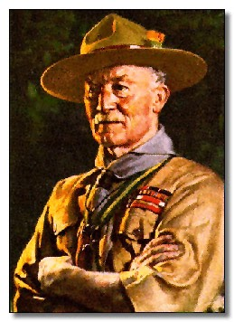

Lord Robert Baden-Powell
Pengasas Pergerakan Pengakap Dunia
Pergerakan Pengakap telah diasaskan oleh seorang warganegara British
bernama Robert Stephenson Smyth Baden-Powell,
yang lebih dikenali sebagai Lord Baden-Powell
atau BP. Beliau dilahirkan di
London, England pada 22 Februari 1857
dan meninggal dunia pada 8 Januari 1941 di
Paxtu, Kenya.
Bapa Baden-Powell ialah Reverend H.G. Baden-Powell,
seorang mahaguru di Universiti Oxford, manakala ibunya merupakan
anak kepada seorang Laksamana Tentera Laut British,
W.T. Smyth. Selepas kematian bapanya ketika beliau
berusia tiga tahun, Baden-Powell dibesarkan oleh ibunya dalam
keadaan kehidupan yang sederhana.
Semasa zaman persekolahan, Baden-Powell aktif dalam pelbagai
kegiatan seperti berlakon, menyanyi dan menembak.
Pada waktu cuti sekolah pula, beliau sering mengembara bersama
saudara-saudaranya melalui aktiviti
berkhemah, belayar dan berperahu.
Pengalaman inilah yang kemudiannya banyak mempengaruhi idea
kepengakapannya.
Pada tahun 1876, selepas berjaya dalam peperiksaan
tentera, Baden-Powell ditauliahkan sebagai
Leftenan Muda dan memulakan perkhidmatan ketenteraan
di India dan Afghanistan.
Beliau kemudiannya berkhidmat di Natal (Zululand)
dan Malta sebagai Penolong Setiausaha Tentera.
Beberapa tahun kemudian, beliau dihantar ke
Afrika Barat untuk menamatkan peperangan di
Ashanti, Ghana.
Di sana, beliau diberi gelaran “Kantankye”
yang bermaksud Topi Besar.
Disebabkan kewaspadaan dan kebijaksanaannya dalam peperangan,
beliau turut digelar “Impeesa”,
iaitu Serigala yang tidak pernah tidur.
Pada tahun 1897, Baden-Powell dinaikkan pangkat
sebagai Kolonel dan ditempatkan di India untuk
memimpin Dragoon Guards ke-5.
Ketika ini, beliau mula memperkenalkan satu lencana khas
dikenali sebagai “Scouts” kepada askar-askar
yang menunjukkan kebolehan kepimpinan dan peninjauan yang tinggi.
Dalam tahun 1899, Baden-Powell kembali ke England
dengan sebuah buku hasil penulisannya berjudul
“Aids to Scouting”,
yang mengandungi pengalaman peninjauan beliau semasa bertugas
di India. Tidak lama kemudian, beliau dihantar ke
Afrika Selatan untuk mempertahankan bandar
Mafeking dalam Peperangan Boer.
Walaupun hanya mempunyai kira-kira
1,000 orang askar berbanding
9,000 orang tentera Boer,
Baden-Powell berjaya mempertahankan bandar tersebut melalui
strategi yang bijaksana, termasuk penggunaan belia sebagai
penghantar mesej dan peninjau.
Kejayaan ini menyaksikan beliau dinaikkan pangkat sebagai
Mejar Jeneral pada usia 43 tahun,
menjadikannya antara pegawai termuda menerima pangkat tersebut
dalam Tentera British.
Selepas bersara daripada perkhidmatan tentera, Baden-Powell
menganjurkan satu perkhemahan eksperimen selama 10 hari
di Pulau Brownsea, England pada tahun
1907, yang melibatkan
21 orang kanak-kanak lelaki.
Perkhemahan ini menjadi asas kepada penubuhan
Pergerakan Pengakap.
Pada tahun 1908, beliau menerbitkan buku
“Scouting for Boys” yang mendapat sambutan luar biasa
dan menyebabkan Pergerakan Pengakap berkembang pesat di
England sebelum merebak ke seluruh dunia.
Di Malaysia, pergerakan ini bermula pada tahun
1910 di Singapura oleh
F.C. Sands dan seterusnya berkembang ke seluruh
Tanah Melayu dan Borneo.